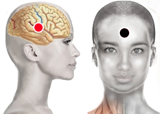
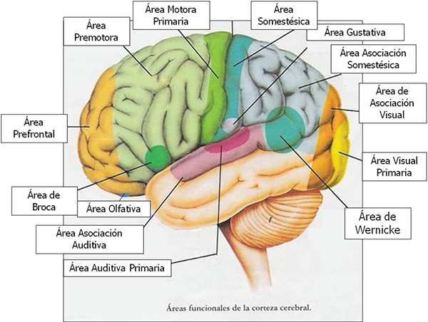

Conciencia
Par
corteza cerebral - hipófisis

Conciencia y funciones cognitivas:
Los procesos cognitivos los usamos para incorporar nuevos conocimientos y tomar decisiones, forman parte de la conciencia. Las funciones cognitivas son:
Ellas nos dan la capacidad de percibir, imaginar, hacer juicios y decidir. Las funciones cognitivas se llevan a cabo en la corteza cerebral, cada área especializada en funciones específicas. La corteza cerebral en realidad se trata de dos hemisferios: derecho e izquierdo unidos mediante el cuerpo calloso. El hemisferiio derecho relacionado con el pensamiento intuitivo, artístico y el izquierdo con el pensamiento lógico, racional y lineal. A su vez, cada hemisferio está formado por cuatro lóbulos separados por grandes surcos. El testeo de cada una de las zonas de la corteza cerebral permitirá encontrar el punto que se deba impactar según la función que se quiera activar.

Lóbulos del cerebro y funciones